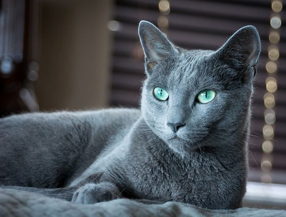
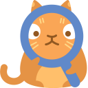
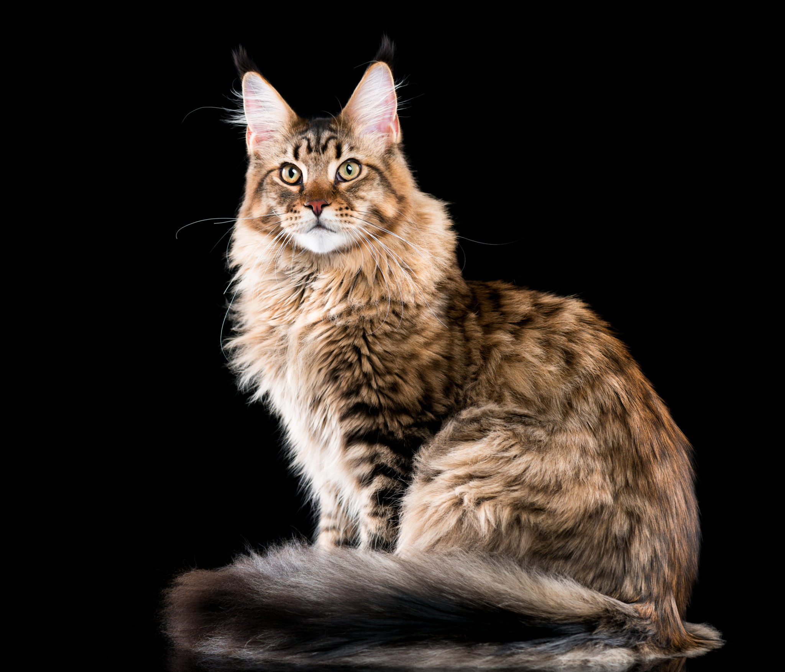

Abisinio
El gato abisinio proviene de África; es un gato mediano, muy curioso, sociable, activo, elegante, silencioso e inteligente; también se conoce por ser fiel, disfruta de la compañía humana, y le encanta el espacio; ¡Además es un buen trepador! Su pelo es corto y fácil de cuidar.

Angora
Originario de Turquía, donde es un símbolo tradicional de la pureza, el angora suele ser blanco pero también los hay negros y rojizos; es inteligente, curioso, ágil y muy activo, pero de igual manera valora la tranquilidad y le gusta estar en compañía humana, mientras no sea multitudinaria. Es un gato afectuoso y apapachable
Azul Ruso
El azul ruso es un gato de tamaño mediano a grande, del pelaje doble, fino, corto y con una textura distintiva y suave. Esta raza es callada, sensible y un poco tímida pero, una vez que su precaución le permite desarrollar una relación, es extraordinariamente fiel a su amo.
Referencias
Primer gato domestico
Relación con Egipcios
Creencias de los Egipcios
Evolución

Razas más comunes de gatos
¿Cúales son las razas más comunes?
Bombay
El bombay es un gato mediano, de pelo negro brillante y ojos dorados o cobre. Esta raza inteligente, musculosa y fuerte, surgió por obra del hombre. El gato bombay es súper cariñoso y amistoso, por lo que una familia que lo mime es la opción perfecta.
Birmano
El birmano es una raza con pelo semilargo, bastante grande rechoncha; tiene ojos azules y patas blancas. Es un gato especialmente dócil que disfruta la compañía humana siempre y cuando no sea muy ruidosa.
Británico de pelo corto
Es un gato robusto por no decir súper gordito, de pelaje corto, y con múltiples combinaciones de colores. Su origen es el Reino Unido, donde es una de las razas preferidas. Es amable y cariñoso con humanos y otros animales.
Maine Coon
Es la raza más grande de gatos, con una gran musculatura y pelaje largo, grueso y denso de varios colores; es reconocido como dulce, juguetón y amistoso. Disfruta de la compañía humana y requiere relativamente pocos cuidados. Eso sí, ten en cuenta que son gatos que disfrutan de la caza y el aire libre.
Persa
El persa es un gato de pelo largo, fornido, de cara plana y un simpático gesto “enojón”. Ésta es una raza que requiere de un gran compromiso: su pelaje necesita cepillado diario, y sus ojos, limpieza constante.

Ragdoll
Un gato imponente, grande y fuerte, pero a su vez relajado, tranquilo y muy confiado. Tiene un pelaje mediano y sedoso con distintas combinaciones de colores y patrones. Es una de las razas más tranquilas, tolerantes y fieles. Su pelo también requiere atención diaria.
Siamés
El siamés es un gato mediano, atlético y elegante, de pelaje corto y distintivo: pálido en el cuerpo y oscuro en las patas, cara, orejas y cola; siempre con ojos azul intenso. Originario de Tailandia, el siamés es un gato longevo, extrovertido, muy inteligente y, a veces, muy ruidoso: exige atención y no le gusta la soledad.

Sphynx
El esfinge es un gato muy particular porque no tiene pelo, o al menos eso aparenta… Con una capa de pelo fino y delgado, es un gato fino aunque musculoso y un poco arrugado en algunas partes del cuerpo. Algo así como el xoloitzcuintle de los gatos.
Referencias
Alimentación
Cuidados
Formas de cuidado
Razas